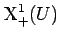

Inhalt Index DeskTop Bronstein

 Dynamische Systeme und Chaos Gewöhnliche Differentialgleichungen und Abbildungen Strukturelle Stabilität (Robustheit) Generische Eigenschaften
Dynamische Systeme und Chaos Gewöhnliche Differentialgleichungen und Abbildungen Strukturelle Stabilität (Robustheit) Generische Eigenschaften


Für ebene Differentialgleichungen ist die Menge aller strukturstabilen Systeme aus offen und dicht in . Strukturstabile Systeme sind für die Ebene also typisch. Typisch ist also auch, daß jeder Orbit eines ebenen Systems aus X1+(U) für wachsende Zeiten gegen eine endliche Anzahl von Ruhelagen und periodischer Orbits geht. Quasiperiodische Orbits sind nicht typisch. Unter bestimmten Voraussetzungen bleiben aber bei HAMILTON-Systemen quasiperiodische Orbits bei kleinen Störungen der Differentialgleichung erhalten. HAMILTON-Systeme sind also keine typischen Systeme.
| Beispiel |
|
Gegeben sei im das HAMILTON-System (in Winkel-Wirkungsvariablen) Das Theorem von KOLMOGOROV-ARNOLD-MOSER (KAM-Theorem) sagt in dieser Situation aus, daß, falls H0 nichtdegeniert ist, d.h. gilt, für hinreichend kleine |